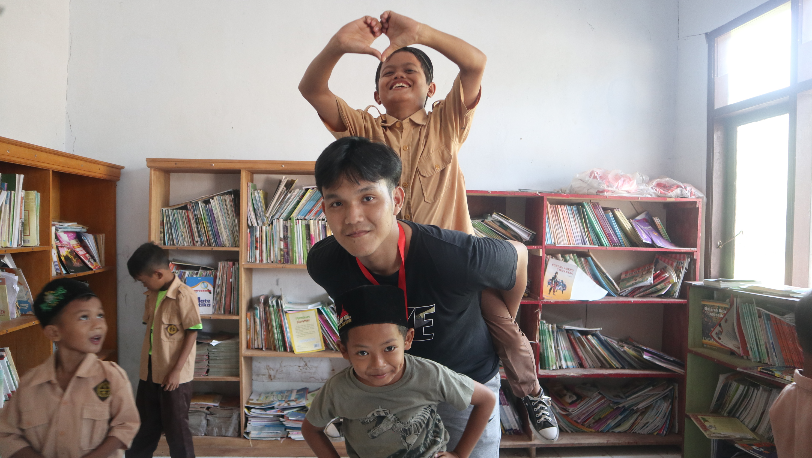
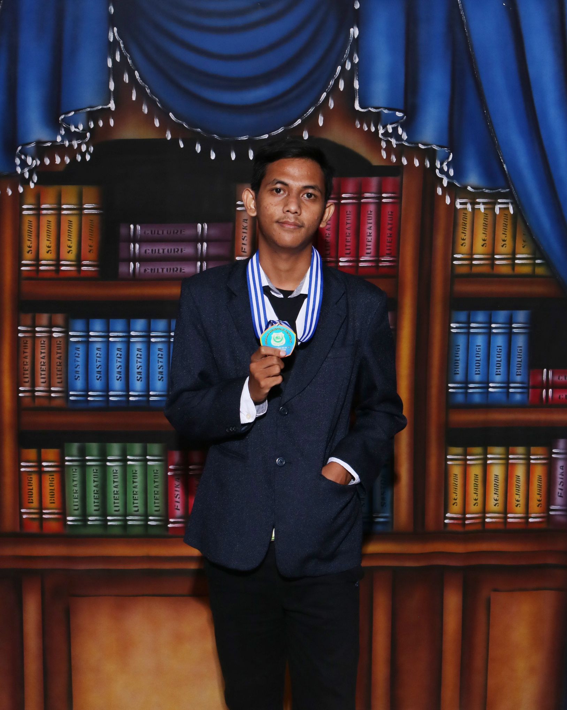
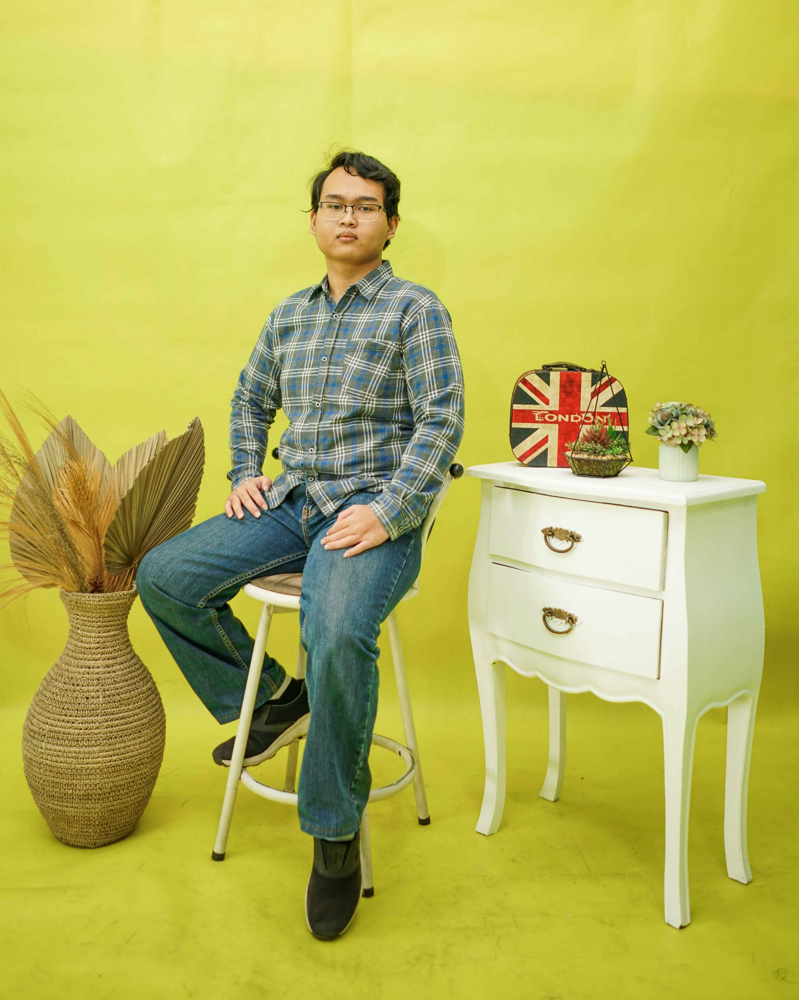
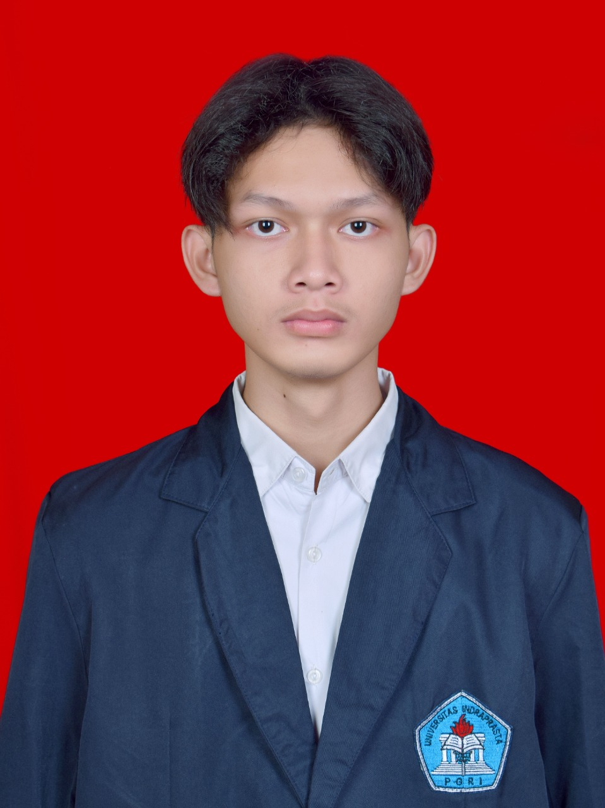
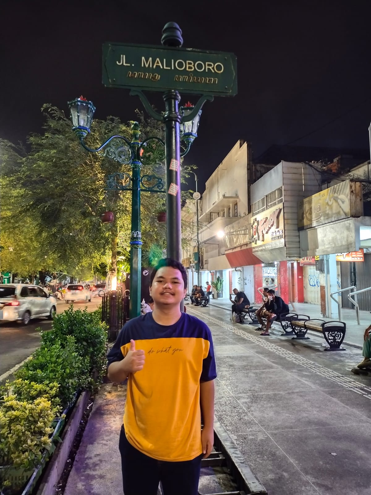

Tentang Jurusan Teknik Informatika
Apa itu Teknik Informatika?
Teknik informatika adalah bidang ilmu yang mempelajari teknologi komputer, perangkat lunak, dan aplikasi di berbagai industri
Prospek Kerja di bidang Teknik Informatika
beberapa Prospek Kerja yang bisa dicapai teknik informatika :
Materi yang Dipelajari
Beberapa materi yang umum dipelajari dalam Teknik Informatika meliputi:
- Pemrograman (Java, html, dll.)
- Sistem Operasi
- Basis Data
- Jaringan Komputer
- Struktur Data
- Algoritma
- Sistem Digital

| Hari | Mata Kuliah | Jam | Dosen | Ruangan |
|---|---|---|---|---|
| Senin | Ilmu Sosial dan Budaya Dasar | 07:30 - 10:00 | Tuty Kurniawaty Saragih S.Sos., M.Pd. | 5.5-3 |
| Teori Dasar Automata | 10:00 - 12:30 | Ika Mei Lina M.Kom. | 5.5-3 | |
| Selasa | ||||
| Rabu | Pemrograman Berorientasi Objek | 07.30 - 10.00 | Ade Kurnia Solihin M.Pd., M.Kom. | 5.5-3 |
| Sistem Operasi | 10.00 - 12.30 | Bondan Dwi Hatmoko S.T., M.Kom | 5.5-3 | |
| Kamis | Pemrograman Web Dasar | 12.30 - 14.10 | Sri Melati Sagita S.Kom., M.M.S.I. | 5.2-3 |
| Statistika Lanjut | 14.10 - 15.50 | Nurfidah Dwitiyanti M.Si. | 5.2-3 | |
| Jumat | Kecakapan Antar Personal | 07.30 - 09.10 | Intan Mutia S.T., M.M.S.I. | 5.2-3 |
| Kewirausahaan | 09:10 - 10:50 | Siti Marti`ah M.Pd. | 5.2-3 | |
Mahasiswa Kelas R5Y:
 Dian Oktaviani 202243502131 |
Khairunnisa 202243502132 |
Rekha Amelia 202243502133 |
Abdul Azis 202243502135 |
Muhammad Safi 202243502136 |
Guntur Prihandoko 202243502137 |
Taufik Hidayat 202243502140 |
Muhammad Arrasy 202243502142 |
Aldy Nur Hidayat 202243502143 |
Adriansyah Dwi 202243502145 |
Rio Ferdian 202243502147 |
 Tafarel Hutama 202243502149 |
Muqsith Ali Rifqi 202243502153 |
Amanda Susanti 202243502156 |
Rahmad Fitrianto 202243502157 |
|  Muhammad Ridwan 202243502158 |
Budi Prasetyo 202243502162 |
Ardhian Putra 202243502163 |
Muhammad Ferkhad 202243502170 |
 Ilhan Septian 202243502173 |
|  Arief Fachri 202243502174 |
Ahmad Nurhadi 202243502179 |
Selvia Destri 202243502181 |
Rafi Sultan 202243502183 |
Muhammad Adam 202243502186 |
Andika Eza 202243502187 |
 Muhammad Fadillah 202243502190 |